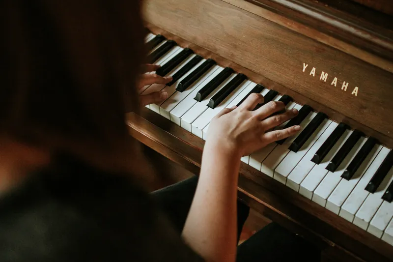
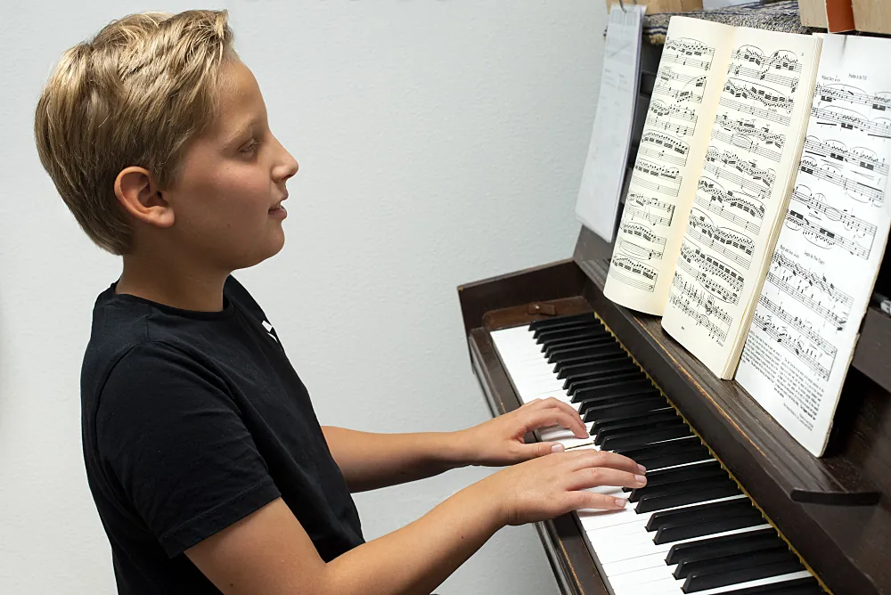
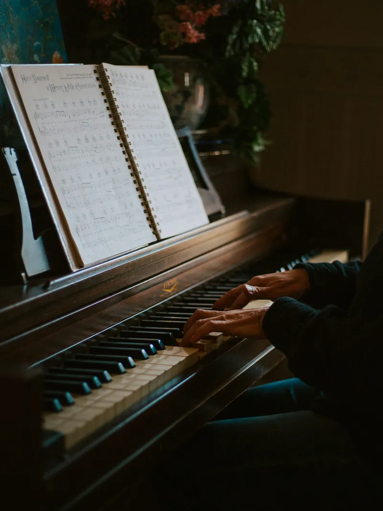
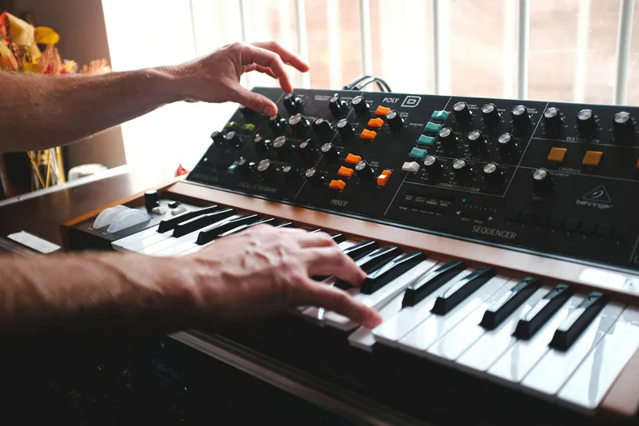

Kids en tieners
Vrolijke stukken als Bongo boogie, en nummers die ze zelf kennen. Zo blijven ze uit zichzelf oefenen.
Piano- en keyboardles in Berlicum · opgeleid aan het Fontys Conservatorium
Akoestische piano of keyboard, klassiek of pop. Het plezier in spelen staat voorop.
Wim laat je kennismaken met verschillende genres en helpt je zoeken naar muziek die jij leuk vindt. Hij werkt met een uitgebreide digitale bibliotheek vol muziekstukken en eigen arrangementen.
"Het plezier in spelen staat voorop."


Vrolijke stukken als Bongo boogie, en nummers die ze zelf kennen. Zo blijven ze uit zichzelf oefenen.

Beginnen of de draad weer oppakken. In jouw tempo, met muziek die jij mooi vindt.

Improvisatie, begeleiden en spelen in een band, van een docent die zelf op het podium staat.

Een digitale piano klinkt nooit precies als een akoestische, maar komt bij de huidige generatie heel dicht in de buurt. Hij is vaak goedkoper en met een koptelefoon houd je de buren te vriend.
De proefles is gratis. Daarna betaal je per kwartaal, voor 38 à 40 lessen per jaar.
Ontdek of pianospelen iets voor je is en of de aanpak je bevalt.
Plan je gratis proefles